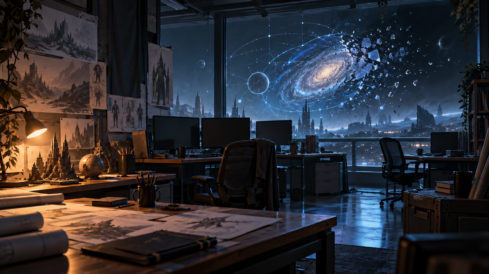

news · Industry
EA Closes BioWare and Cancels Mass Effect
EA is closing BioWare and has ended early development on the next Mass Effect, reversing its public commitment to the project from last year.

What happened
Electronic Arts confirmed on October 21 that it will close BioWare and the studio's Edmonton workspace. EA also said it will not move forward with the next Mass Effect, which a small BioWare team had been developing at an early stage. BioWare published a separate farewell confirming both decisions. AP and VGC independently reported the closure and cancellation.
The decision reverses BioWare's November 2025 statement that the next Mass Effect was in development and that EA remained committed to telling more stories in the universe. EA had announced the project with a teaser in 2020 but never gave it a final title, platforms, release date or a public gameplay reveal. Players should now regard that specific project, not necessarily the Mass Effect franchise forever, as cancelled.
What EA confirmed — and what remains reported
EA's public memo says the company is concentrating investment around core franchises, new markets and sports-related experiences. It confirms continued investment in future Battlefield projects, Apex Legends, Marvel's Iron Man and the next Star Wars Jedi game. It also says Respawn and DICE will collaborate on an unannounced shooter project, while BioWare's Mass Effect work will end and the studio will close.
AP and VGC, citing Bloomberg's reporting, say EA is cutting about 400 jobs company-wide, including roughly 50 at BioWare. EA's public post does not give those figures, and AP says the publisher did not immediately answer its request for comment on the layoffs. EA has not announced what will happen to the Mass Effect or Dragon Age intellectual property, whether another studio could use them later, or whether any existing BioWare game, online service or storefront listing will change.
The Arcade World take
For players, the immediate loss is concrete: the follow-up teased in 2020 and reaffirmed in 2025 is no longer coming from BioWare. The larger consequence is institutional. BioWare spent more than 30 years shaping choice-driven role-playing games through Baldur's Gate, Neverwinter Nights, Star Wars: Knights of the Old Republic, Dragon Age and Mass Effect. Closing the studio removes the team and label that connected those traditions, even though EA retains the franchises.
It would be speculation to declare Mass Effect or Dragon Age permanently dead. EA could license, reboot or reassign either series, but it has promised none of those outcomes. The useful distinction is between an IP that still exists and an active game that does not: fans have no confirmed new Mass Effect game to wait for after this cancellation.
What players should do next
There is no official reason to rush into a purchase. EA has not announced delistings for the Mass Effect Legendary Edition, Dragon Age games or BioWare's older catalog, and the closure notice does not change ownership of already purchased games. Players interested in preservation can keep legitimate local installers and current patches where their platform permits, but should not treat an unannounced shutdown as fact.
The next reliable checkpoints are EA's November global town hall, any official online-service update and a direct statement about which teams will maintain existing BioWare releases. Until EA names a new project and developer, trailers, alleged pitches and claims that another studio has inherited Mass Effect should be treated as rumor rather than a continuation of the cancelled game.
Sources and further reading
- Electronic Arts — official portfolio and BioWare closure memo
- BioWare — official studio closure and Mass Effect cancellation statement
- BioWare — November 2025 Mass Effect development commitment
- AP — independent confirmation and reported layoff context
- VGC — independent confirmation and reported portfolio context
Keep exploring
Open the Game Room or visit the latest stories.